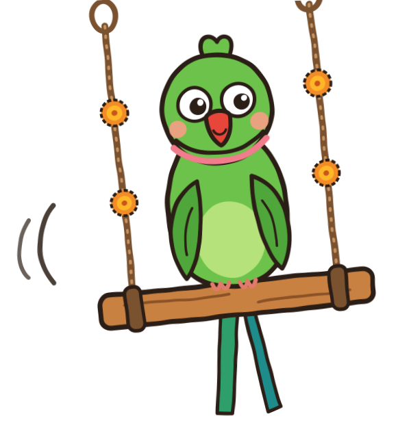

The studio behind Jhoola Junction
Jhoola Junction is a YouTube channel of short, original animated videos for young children (ages 1–8) in Hinglish. Each video teaches one simple idea, like colours, counting, sharing or saying sorry. Every video is set as made for kids.

What Jhoola Junction Studio is
Jhoola Junction Studio is a private tool that runs on the channel owner's own computer. It helps him plan, script, voice and animate each video, then prepares it for YouTube with a title, description and tags. It is not a public service: there are no accounts, no sign-ups and no users other than the channel owner.
How it uses YouTube
The Studio works only with the owner's own channel, and only with his permission, given through Google's standard consent screen:
- Channel statistics, read-only. It reads views, watch time and subscribers for the channel's own videos, so the owner can see which lessons work.
- Uploading approved videos. A video goes to YouTube only after the owner has approved its topic, its script and the finished video himself. Each upload is marked made for kids. Today the owner uploads by hand; when the Studio's upload feature is switched on, it asks for that permission separately.
The Studio never reads other people's channels, never collects anything about viewers or children, and never posts comments, likes or views.